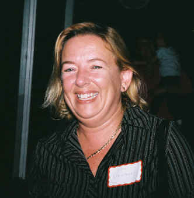

Viaggio Note
V041101
Bloggers
Bellevue Meet-Up October 5, 2004
|
|
Viaggio Note
V041101 |
|
 Liz Lawley - twinkling Mama of Mamamusings |
2004 October
5. This Tuesday meet-up ended up combined
with a geek dinner. The occasion was a number of known bloggers (Search
Champs) visiting
Microsoft to preview some initiatives that were happening with search
products at Microsoft. This meant that several
well-known bloggers were in town and that presented an opportunity
to finally meet two people who were the first to be added to my neophyte RSS subscriptions last May. Dave Weinberger was already on a plane but Liz Lawley and some others arrived at the meet-up. I almost missed Liz (I did miss Lion Kimbro, but he connected us by telephone later and we finally managed to meet at the first Northern Voices). I got to acknowledge Liz for her web and the way she shared her experiences with Al-Anon. Liz (and Dave) take time to speak themselves as well as address blogosphere topics that fascinate them. We talked about Rochester, where I lived long enough to regard it as a home town, about Grace Hopper and my personal recollections of her, world affairs, civility and recovery. One of the wonderful experiences of Meet-Ups and of Geek Dinners are the coincidental arrivals of connections. Liz had arrived with the Leungs, and I learned that Ted, who I'd not met before, is working with Lisa Dussault. I also fussed with my flash and switching rolls of film so I was fortunate that they stood still for me this long. I still have to get the new flash figured out, not to mention getting all of the little people into the frame. After this meeting I checked out Julie's blog and I have been a fan ever since. |
|
I placed a number of photos on the Meet-Up site, but these were on the start of a new roll. I think all 3 Leung children were there, but I didn't get the other standing child into the picture. I need to come back and fill in but I am using the library cataloger trick of getting the new entries complete, then working backward into the older material. At least, that is what I say I am doing. |
[I've taken down this picture at Julie's
request. I'll explain later.] |
|
|
You are navigating Orcmid's Lair |
created 2004-10-02-22:16 -0700 (pdt) by
orcmid |